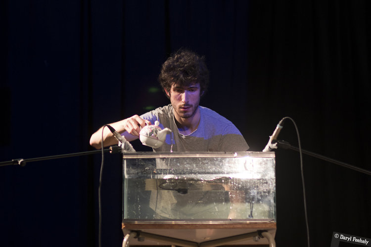

Sebastian Adams (b. 1991) is an Irish composer, performer and artistic director with a broad practice currently centring on conceptual music and creative coding. Recent projects include a string quartet performing in the sea as the tide rises around them, an interactive program that turns Twitch chat streams into animated music notation, and “Stolen Music”, a large-scale projectin the tradition of plunderphonics, comprising nothing but uncleared and unauthorised audio and video samples. He is currently based in Paris, and maintains close links to the scene in Dublin. In 2012, Sebastian founded Kirkos, a leading Irish experimental music ensemble which currently runs one of Dublin’s only DIY music venues as well as creating major projects of its own. This year, Kirkos will present a new group commission at the Huddersfield Contemporary Music Festival. Past projects include Dublin’s first Fluxus Happening, concerts in total darkness paired with experimental food, and Biosphere, a major series of outdoor, site-specific, climate-engages events held during the pandemic. He has been widely commissioned and performed in Ireland, Europe and North America, including Boston, Harvard University, Vienna, Graz, Paris, Marseille, Montreal, Cologne, New York, Potsdam, Antwerp and Görlitz. He was Composer-in-Residence for the Irish national broadcaster’s arts radio station (RTÉ lyric fm) in 2016/17 and represented Ireland in the International Rostrum of Composers in 2017. As a performer, Sebastian has created solo projects, premiered many solo and chamber works for viola, and enjoys working closely with composers on their new music. He is particularly active as an improviser. He also occasionally performs early music on viola and gamba, although not so much since the pandemic.. He studied in Dublin (Kevin O’Connell & Jonathan Nangle) and Vienna (Karlheinz Essl). His most recent viola teacher was Simon Aspell. He recently finished the IRCAM Cursus programme in Paris, where his teachers included Claudia Jane Scroccaro and Pierre Jodlowski.
(photo above courtesy of Miriam Kaczor. Photo below from Daryl Feehely)
